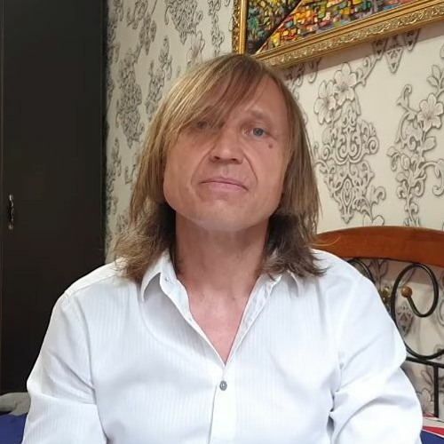

Макакыч — не только странный и эксцентричный ученый, но и весьма агрессивный персонаж. Он имеет особую привычку «лаять» на студентов, особенно если что-то идет не так, как ему хочется. Его отношения с молодым поколением строятся не на доброжелательности, а на строгих, порой даже грубых замечаниях, сопровождающихся «лающими» упреками. Найти контакт с великим ученым сложно: обычные деньги, конфеты, а уж тем более коньяк Макакыч не берет. Однако он очень падок на жрачку: найти контакт можно даже при помощи батона колбасы. Кроме того, доктор пожирательных наук может внезапно впасть в глубокий сон прямо посреди лекции или эксперимента, оставляя студентов в полном замешательстве.
Во время лекций или практических занятий Макакыч не стесняется в выражениях. Если студент ошибается или не понимает квантовые научные объяснения, Макакыч тут же начинает «лаять» на него. Его крики и выкрики часто эхом разносятся по всему университету, и студенты, особенно новички, чувствуют себя как на экзамене по выживанию.
«ГАВ ГАВ ГАВ» — частая фраза Макакыча, когда кто-то из студентов не может понять элементарных основ пожирательных наук. И если студент не может ответить на его вопрос, Макакыч поднимает голос: «Как же ты будешь заборы строить, если даже элементарные вещества не можешь идентифицировать?!» Макакыч привык к строгому порядку и не терпит даже малейших ошибок. Он считает, что «лаять» на студентов — это часть образовательного процесса, ведь, по его мнению, только так можно выковать из них настоящих научных бойцов.
В университете ходят легенды о том, как Макакыч однажды уснул прямо во время своей лекции, объясняя сложные формулы пожирательных реакций. Его громкий голос внезапно сменился храпом, а студенты остались наедине с загадочным уравнением на доске. Некоторые студенты пытались разбудить его, другие просто смирились и записывали храп как "практическую часть занятия".
Сам Макакыч утверждает, что его внезапные сны — это часть научного процесса. "Мозг должен отдыхать, чтобы усваивать сложные идеи", — говорит он. Кроме того, он уверяет, что именно во сне ему приходят самые революционные идеи. Однажды, по его словам, он во сне открыл способ переработки старых заборов в новые наноматериалы путем наноразгрызания. Правда, наутро он не смог вспомнить формулу, но твёрдо уверен, что когда-нибудь её снова увидит… в своих снах
Макакыч, несмотря на свои странные привычки, остаётся неотъемлемой частью университета. Многие коллеги смотрят на него с недоумением, но уважают за его научные достижения и забористый характер. Говорят, что его привычка засыпать в неожиданных местах стала такой же легендой, как и его способность громко "лаять" на студентов.
Игорь Вихорьков

Руководитель лаборатории Унитаз-Ресерч
Игорь Вихорьков, руководитель лаборатории унитаз-ресерч в Малопендюринском Заборостроительном университете, — настоящий новатор в своей области. Его лаборатория является центром передовых исследований в самых неожиданных направлениях, связанных с санитарно-техническими устройствами, которые он сам называет "порталами в будущее".
Лаборатория Вихорькова занимается разработкой унитазов нового поколения: от моделей с искусственным интеллектом до устройств, способных перерабатывать отходы в энергию. Сам Игорь называет свою работу "наукой о замкнутых циклах", утверждая, что "каждый цикл — это не просто конец, а новое начало".
Вихорьков — человек, который верит в практичность науки. Именно поэтому его часто можно увидеть не в лаборатории, а в университете, где он лично тестирует свои устройства в самых неожиданных местах. Студенты с ужасом вспоминают день, когда Игорь устроил "унитазный флешмоб" в столовой, чтобы протестировать новые системы фильтрации.
Игорь Вихорьков славится своим трудоголизмом и своеобразным подходом к мотивации сотрудников. Он часто заявляет: "Если ты не готов спуститься в канализацию ради науки, то тебе не место в унитаз-ресерче!" Чтобы вдохновить команду, он однажды заставил всех сотрудников лаборатории неделю проводить эксперименты в настоящих канализационных коллекторах.
Студенты боятся и одновременно обожают Вихорькова. Он часто устраивает неожиданные тесты, например, предлагает "погрузиться в мир трубы", закинуть петарды в унитаз и залезть внутрь экспериментальных конструкций, чтобы найти ошибки. Тем, кто справляется, Игорь дарит памятные сувениры, которые он лично достает из канализации.
Если студент недостаточно старается, Вихорьков может заявить: "Ты не заслуживаешь сидеть на моих унитазах!" — после чего отправляет нерадивого подопечного чистить старые трубы в подвале университета.
Игорь Вихорьков — это человек, который сделал унитаз символом научного прогресса. Несмотря на странности, его изобретения уже внедряются в быту и промышленности. Благодаря его трудам, Малопендюринский университет стал известен как центр инноваций не только в заборостроении, но и в санитарных технологиях.
Владимир Ульянович Лёнин
Руководитель нанозабороисторического направления
Владимир Ульянович Лёнин занимает в Заборостроительном университете почётный (и опасный) пост руководителя направления "Исторические заборы". Его миссия? Не только воссоздать древние технологии заборостроения, но и, по возможности, коммунизм.
Лёнин утверждает, что "забор — это основа любой идеологии", и именно через них он пытается возродить утопическое общество. Он активно воссоздаёт "исторически правильные" заборы, каждый из которых символизирует один из великих этапов революции: "Красный частокол", "Баррикада свободы" и даже экспериментальный проект "Берлинская стена-2.0" с лазерами и бесплатным Wi-Fi для рабочих.
Однако главным проектом Лёнина остаётся его тайная армия терминаторов, которую он собирает в подвалах университета. Это не обычные роботы, а высокотехнологичные "революционные бойцы", каждый из которых оснащён гаечным ключом, красным флагом и встроенным динамиком для трансляции "Интернационала". Эти терминаторы, по замыслу Лёнина, должны сыграть ключевую роль в мировом восстании пролетариата.
Студенты, которым довелось случайно попасть в подвалы, утверждают, что видели там "стального Ленина" — огромного робота с бородой и кепкой, который лично командует металлической армией. Говорят, что этот робот может цитировать "Капитал" Маркса с ошибками и не способен находить разногласия в теории Маркса, но имеет очень громкий и харизматичный голос.
Лёнин регулярно устраивает в университете мини-революции. На заседаниях учёного совета он ставит ультиматумы, цитируя Маркса, Энгельса и случайные статьи из Википедии. Его любимое развлечение — устраивать "штурмы" ректората, требуя отмены экзаменов и установления "диктатуры студенческого пролетариата".
Когда университет пытается его уволить, он немедленно объявляет забастовку, блокирует кабинеты самодельными баррикадами и организует марши студентов под лозунгом: "За Лёнина и бесплатные обеды!".
Несмотря на эксцентричность, Лёнин — невероятно талантливый учёный. Он изобрёл забор, который может менять высоту в зависимости от социального неравенства, и даже запатентовал "коллективный забор" — конструкцию, которая строится только при совместных усилиях целой общины.
Лёнин носит неизменную кепку, бороду и пальто. Его кабинет украшен портретами автопортретами Ленина, Карла Маркса и почему-то Брюса Спрингстина. В подсобке у него хранятся старые революционные артефакты.
Во время лекций Лёнин любит внезапно переключаться с темы на революционные лозунги. Студенты знают: если он достаёт красный флаг и начинает кричать "Вперёд, к забористому будущему!" — пора бежать.
Лёнин не скрывает своих амбиций: восстановление Советского Союза, внедрение заборов с коммунистическим сознанием и колонизация Марса под красным знаменем. В перспективе он планирует создать новый факультет "Заборостроительной революции", где каждый студент сможет "вбить гвоздь в фундамент мирового равенства".
Его лозунг: "Каждый забор — это шаг к коммунизму".